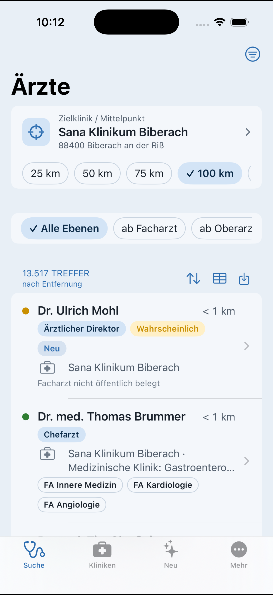

Diese App ist nicht im App Store. Du installierst sie kostenlos mit SideStore (oder AltStore) und deiner eigenen Apple-ID.
Danach in SideStore unter Browse die App installieren. Updates erscheinen dort automatisch.
Quelle manuell: https://mokokoooo.github.io/klinikradar-app/source.json
Direkte IPA: KlinikRadar.ipa
Hinweis: Mit einer kostenlosen Apple-ID läuft die Signatur nach 7 Tagen ab. SideStore erneuert sie, wenn du die App regelmäßig öffnest.

Die Android-App gibt es als APK unter Releases. Herunterladen, öffnen und die Installation erlauben.